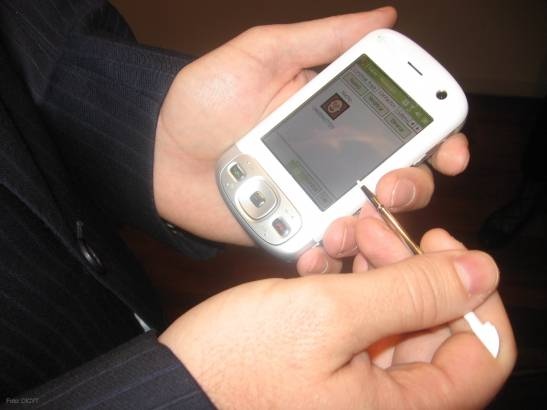

Aplicaciones
"Origen"

Para poder conocer adecuadamente la historia de las aplicaciones móviles es necesario remontarse a la década de los 90, donde pudimos hacer uso de las primeras app de juegos, calendario o agenda
que ya venían integrados en nuestros dispositivos móviles. Así, a las primeras aplicaciones a las que podemos poner nombre son el videojuego Tetris y el famoso Snake.
En junio de 1984 pudimos conocer por primera vez al Tetris, un videojuego creado por informáticos rusos que se ha convertido en uno de los juegos más conocidos y jugados de la historia.
Por otro lado, es obligatorio mencionar el videojuego Snake, el juego más popular y clásico de Nokia. Fue programado en 1997 y apareció por primera vez en el Nokia 6110 y Nokia 3210.
Su éxito fue tan rotundo que en 2009 más de 350 millones de dispositivos móviles ya contaban con este videojuego. Si quieres saber mas de como fue evolucionando
estas aplicaciones te invito a ver Evolución de la web
Aplicaciones más Descargadas de Google Play

Por lo que respecta a Google Play, aunque Android es uno de los sistemas operativos más usados del mundo, sus ingresos siguen estando por debajo de los de App Store.
Sin tener en cuenta los videojuegos, las diez aplicaciones más descargadas de su historia son las siguientes, según una clasificación elaborada por AndroidRank.
1. Facebook
2. WhatsApp Messenger
3. Instagram
4. Facebook Messenger
5. Clean Master (Liberador de espacio y antivirus)
6. YouTube
7. Security Master (Antivirus)
8. UC Browser (Navegador y ad-blocker)
9. Snapchat
10. Google Play Services
La parte más alta del escalafón es muy similar a la de App Store, aunque en el caso de Android queda aún más claro el predominio de Facebook, que copa los cuatro primeros puestos.
Por número de aplicaciones, la medalla de plata la comparten el desarrollador chino Cheetah Mobile, con dos antivirus (Clean Master y Security Master), y Google,
con YouTube y Google Play Services. El "top ten" lo completa otra compañía china - UCWeb, con su navegador para móviles UC Browser y la aplicación de mensajería instantánea Snapchat.